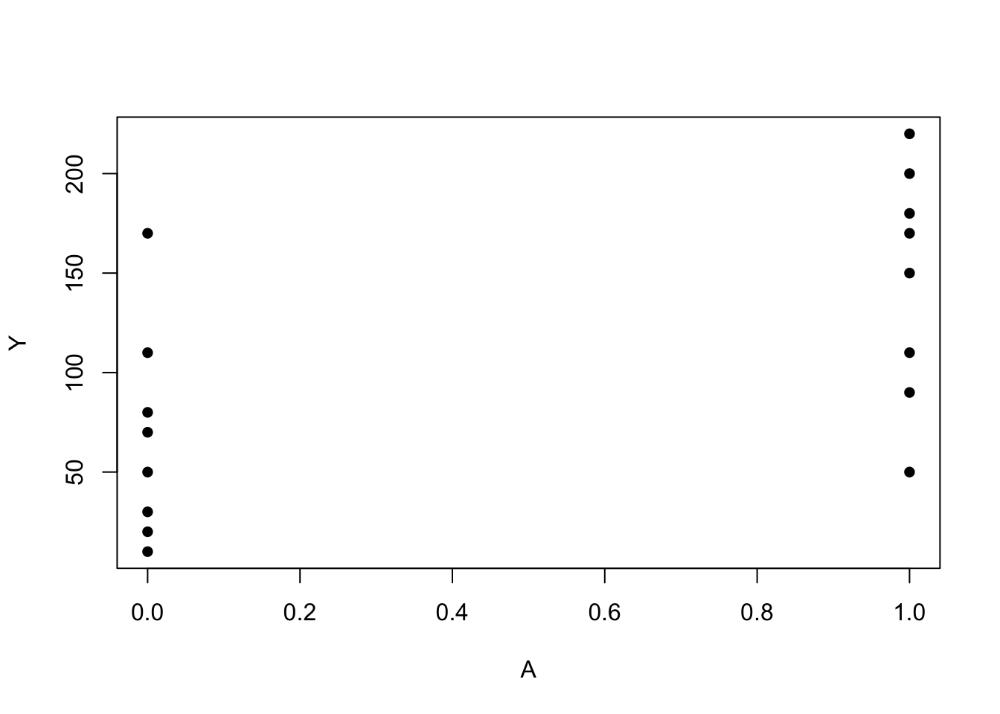
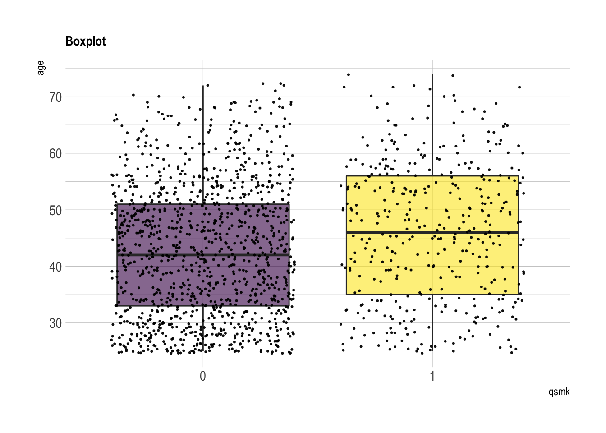
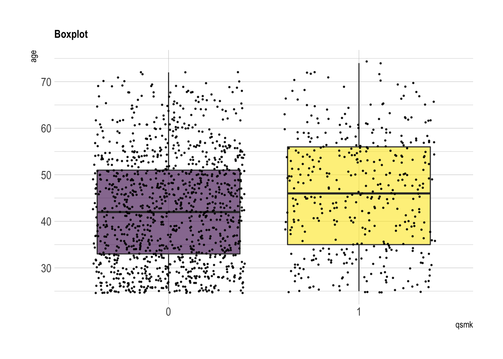

12. IP weighting and marginal structural models
Concepts and points
- Confounder
Estimating IP weights via modeling
Definition
An individual’s IP weight depends on her values of treatment \(A\) and covariate \(L\). Since the denominator of the weight for each individual is the conditional density evaluated at the individual’s own values of \(A\) and \(L\), it can be expressed as the conditional density evaluated at the random arguments \(A\) and \(L\), that is, as \(f(A|L)\). Therefore, we write the IP weights as \(1/f(A|L)\).
- Potential outcome mean for treatment level \(A=a\): \(E(Y^{a})\)
- Standardized mean for treatment level \(A=a\): \(\sum_{l}E(Y|A=a, L=l)P(L=l)\)
- IP weighted mean of \(Y\) for treatment level \(A=a\): \(E\left(\frac{I(A=a)Y}{f(A|L)}\right)\)
Equivalence of IP weighting and standardization
Under the positivity assumption, we have \[\begin{equation*} \begin{split} E\left(\frac{I(A=a)Y}{f(A|L)}\right)=E_{A, L}\left( E_{Y}(\frac{I(A=a)}{f(A|L)}Y|A, L)\right)=E_{A, L}\left( E_{Y}(Y|A, L)\frac{I(A=a)}{f(A|L)}\right) \\ = E_{L}\left(E_{A}\left( E_{Y}(Y|A, L)\frac{I(A=a)}{f(A|L)}|L\right)\right)=E_{L}\left( E_{Y}(Y|A=a, L)|L\right) \\ =\sum_{l}E(Y|A=a, L=l)P(L=l) \end{split} \end{equation*}\]
Equivalence of potential outcome mean, standardized mean and IP weighted mean
- First, we show \(E(Y^a)=\sum_{l}E(Y|A=a, L=l)P(L=l)\) under conditional exchangeability, positivity, and consistency.
\[\begin{equation*} \begin{split} E(Y^{a})=\sum_{l}E(Y^a|L=l)P(L=l) \\ =\sum_{l}E(Y^a|A=a, L=l)P(L=l)=\sum_{l}E(Y|A=a, L=l)P(L=l), \end{split} \end{equation*}\] where the second equality is by conditional exchangeability and positivity, and the third by consistency.
- Second, we show \(E(Y^a)=E\left( \frac{I(A=a)}{f(A|L)}Y \right)\) under positivity, conditional exchangeability, and consistency.
\[\begin{equation*} \begin{split} E\left(\frac{I(A=a)}{f(A|L)}Y\right)= E\left( \frac{I(A=a)}{f(A|L)}Y^a \right)=E\left( E\left(\frac{I(A=a)}{f(A|L)}Y^{a}|L\right) \right) \\ = E\left(E\left(\frac{I(A=a)}{f(A|L)}|L\right)E\left(Y^a|L\right) \right)=E\left(1\times E\left(Y^{a}|L\right) \right)=E(Y^a), \end{split} \end{equation*}\] where the first equality is by consistency, the third by conditional exchangeability. Furthermore, we need positivity to well define the IP weights.
Real data analysis
Background
- NHEFS data (National Health and Nutrition Examination Survey Data I Epidemiologic Follow-up Study)
- Goal: estimate the effect of smoking cessation on weight gain
- \(A=1\): if cigarette smokers reported having quit smoking before the follow-up visit
- \(Y\): the body weight at the follow-up visit minus the body weight at the baseline visit
- \(E(Y^{a=1})\): mean weight gain that would have been observed if all individuals in the population had quit smoking before the follow-up visit
- \(E(Y^{a=0})\): mean weight gain that would have been observed if all individuals in the population had not quit smoking
- Average causal effect: \(E(Y^{a=1})-E(Y^{a=0})\)
Program 12.1
library(here) # for path
library(readxl) # for reafing excel files
library(tidyverse)
library(hrbrthemes)
library(viridis)
# copy from https://www.r-graph-gallery.com/89-box-and-scatter-plot-with-ggplot2.htmlInput dataset
## # A tibble: 6 x 64
## seqn qsmk death yrdth modth dadth sbp dbp sex age race income marital school education ht
## <dbl> <dbl> <dbl> <dbl> <dbl> <dbl> <dbl> <dbl> <dbl> <dbl> <dbl> <dbl> <dbl> <dbl> <dbl> <dbl>
## 1 233 0 0 NA NA NA 175 96 0 42 1 19 2 7 1 174.
## 2 235 0 0 NA NA NA 123 80 0 36 0 18 2 9 2 159.
## 3 244 0 0 NA NA NA 115 75 1 56 1 15 3 11 2 168.
## 4 245 0 1 85 2 14 148 78 0 68 1 15 3 5 1 170.
## 5 252 0 0 NA NA NA 118 77 0 40 0 18 2 11 2 182.
## 6 257 0 0 NA NA NA 141 83 1 43 1 11 4 9 2 162.
## # … with 48 more variables: wt71 <dbl>, wt82 <dbl>, wt82_71 <dbl>, birthplace <dbl>, smokeintensity <dbl>,
## # smkintensity82_71 <dbl>, smokeyrs <dbl>, asthma <dbl>, bronch <dbl>, tb <dbl>, hf <dbl>, hbp <dbl>,
## # pepticulcer <dbl>, colitis <dbl>, hepatitis <dbl>, chroniccough <dbl>, hayfever <dbl>, diabetes <dbl>,
## # polio <dbl>, tumor <dbl>, nervousbreak <dbl>, alcoholpy <dbl>, alcoholfreq <dbl>, alcoholtype <dbl>,
## # alcoholhowmuch <dbl>, pica <dbl>, headache <dbl>, otherpain <dbl>, weakheart <dbl>, allergies <dbl>,
## # nerves <dbl>, lackpep <dbl>, hbpmed <dbl>, boweltrouble <dbl>, wtloss <dbl>, infection <dbl>,
## # active <dbl>, exercise <dbl>, birthcontrol <dbl>, pregnancies <dbl>, cholesterol <dbl>, hightax82 <dbl>,
## # price71 <dbl>, price82 <dbl>, tax71 <dbl>, tax82 <dbl>, price71_82 <dbl>, tax71_82 <dbl>Ignore subjects with missing values for weight in 1982
wt82: weight in 1982qsmk: quit smoking between 1st questionnaire and 1982 (Yes:1; No:0)
Compare the treatment group and the control group
age
## Min. 1st Qu. Median Mean 3rd Qu. Max.
## 25.00 33.00 42.00 42.79 51.00 72.00## Min. 1st Qu. Median Mean 3rd Qu. Max.
## 25.00 35.00 46.00 46.17 56.00 74.00nhefs.nmv %>% ggplot( aes(x=qsmk, y=age, fill=qsmk)) +
geom_boxplot()+
scale_fill_viridis(discrete = TRUE, alpha=0.6) +
geom_jitter(color="black", size=0.4, alpha=0.9) +
theme_ipsum() +
theme(legend.position="none", plot.title = element_text(size=11)) +
ggtitle("Boxplot") +
xlab("qsmk")
wt71
## Min. 1st Qu. Median Mean 3rd Qu. Max.
## 40.82 59.19 68.49 70.30 79.38 151.73## Min. 1st Qu. Median Mean 3rd Qu. Max.
## 39.58 60.67 71.21 72.35 81.08 136.98nhefs.nmv %>% ggplot( aes(x=qsmk, y=wt71, fill=qsmk)) +
geom_boxplot()+
scale_fill_viridis(discrete = TRUE, alpha=0.6) +
geom_jitter(color="black", size=0.4, alpha=0.9) +
theme_ipsum() +
theme(legend.position="none", plot.title = element_text(size=11)) +
ggtitle("Boxplot") +
xlab("qsmk")
smokeintensity: number of cigarettes smoked per day in 1971
## Min. 1st Qu. Median Mean 3rd Qu. Max.
## 1.00 15.00 20.00 21.19 30.00 60.00## Min. 1st Qu. Median Mean 3rd Qu. Max.
## 1.0 10.0 20.0 18.6 25.0 80.0nhefs.nmv %>% ggplot( aes(x=qsmk, y=smokeintensity, fill=qsmk)) +
geom_boxplot()+
scale_fill_viridis(discrete = TRUE, alpha=0.6) +
geom_jitter(color="black", size=0.4, alpha=0.9) +
theme_ipsum() +
theme(legend.position="none", plot.title = element_text(size=11)) +
ggtitle("Boxplot") +
xlab("qsmk")
smokeyrs: years of smoking
## Min. 1st Qu. Median Mean 3rd Qu. Max.
## 1.00 15.00 23.00 24.09 32.00 64.00## Min. 1st Qu. Median Mean 3rd Qu. Max.
## 1.00 15.00 26.00 26.03 35.00 60.00nhefs.nmv %>% ggplot( aes(x=qsmk, y=smokeyrs, fill=qsmk)) +
geom_boxplot()+
scale_fill_viridis(discrete = TRUE, alpha=0.6) +
geom_jitter(color="black", size=0.4, alpha=0.9) +
theme_ipsum() +
theme(legend.position="none", plot.title = element_text(size=11)) +
ggtitle("Boxplot") +
xlab("qsmk")
- sex
##
## 0 1
## 0 542 621
## 1 220 183##
## 0 1
## 0 0.4660361 0.5339639
## 1 0.5459057 0.4540943nhefs.nmv$sex=as.factor(nhefs.nmv$sex)
nhefs.nmv%>%ggplot(aes(x = qsmk, fill = sex)) +
geom_bar(position = "dodge")
- race: 0 if white, 1 if black or other in 1971
##
## 0 1
## 0 993 170
## 1 367 36##
## 0 1
## 0 0.85382631 0.14617369
## 1 0.91066998 0.08933002nhefs.nmv$race=as.factor(nhefs.nmv$race)
nhefs.nmv%>%ggplot(aes(x = qsmk, fill = race)) +
geom_bar(position = "dodge")- education (AMOUNT OF EDUCATION BY 1971): 1 if 8TH GRADE OR LESS, 2 if HS DROPOUT, 3 if HS, 4 if COLLEGE DROPOUT, 5 if COLLEGE OR MORE
##
## 1 2 3 4 5
## 0 210 266 480 92 115
## 1 81 74 157 29 62##
## 1 2 3 4 5
## 0 0.18056750 0.22871883 0.41272571 0.07910576 0.09888220
## 1 0.20099256 0.18362283 0.38957816 0.07196030 0.15384615nhefs.nmv$education=as.factor(nhefs.nmv$education)
nhefs.nmv%>%ggplot(aes(x = qsmk, fill = education)) +
geom_bar(position = "dodge")
- exercise: 0 if much exercise,1 if moderate exercise,2 if little or no exercise
##
## 0 1 2
## 0 237 485 441
## 1 63 176 164##
## 0 1 2
## 0 0.2037833 0.4170249 0.3791917
## 1 0.1563275 0.4367246 0.4069479nhefs.nmv$exercise=as.factor(nhefs.nmv$exercise)
nhefs.nmv%>%ggplot(aes(x = qsmk, fill = exercise)) +
geom_bar(position = "dodge")- active: 0 if very active, 1 if moderately active, 2 if inactive
##
## 0 1 2
## 0 532 527 104
## 1 170 188 45##
## 0 1 2
## 0 0.4574377 0.4531384 0.0894239
## 1 0.4218362 0.4665012 0.1116625